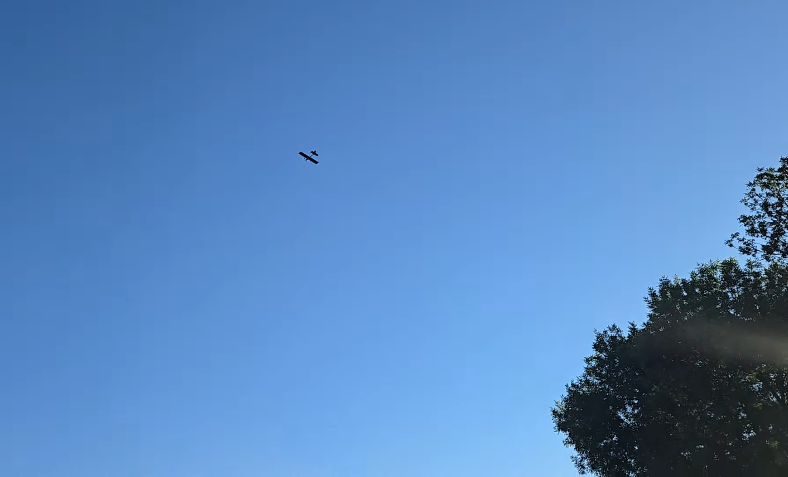
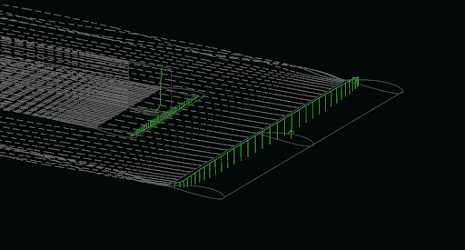
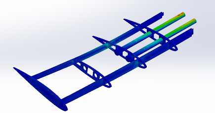
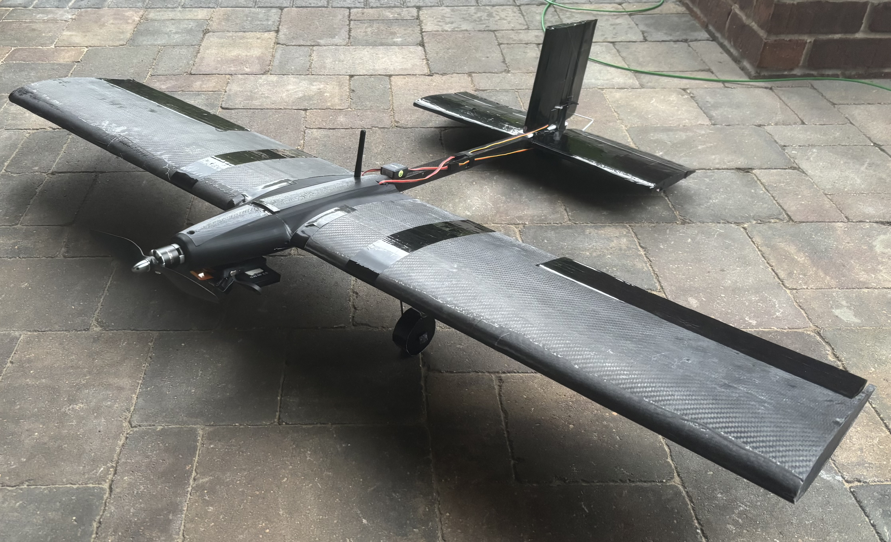
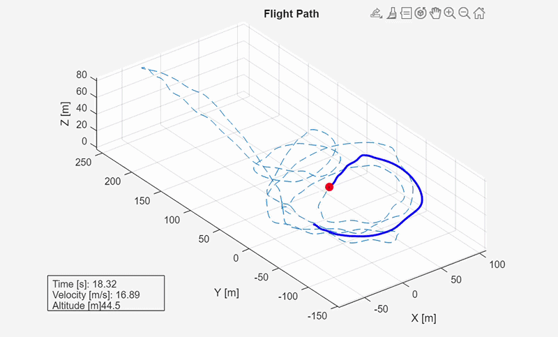
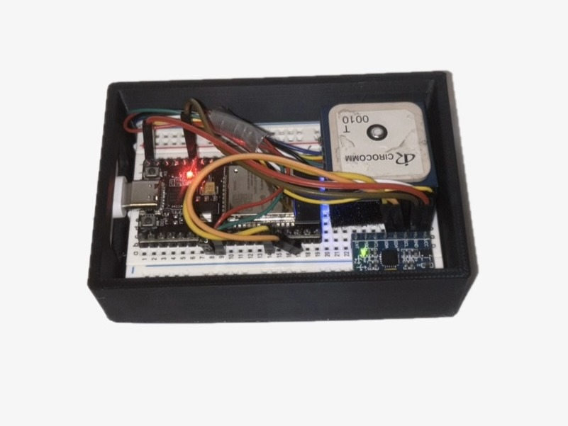
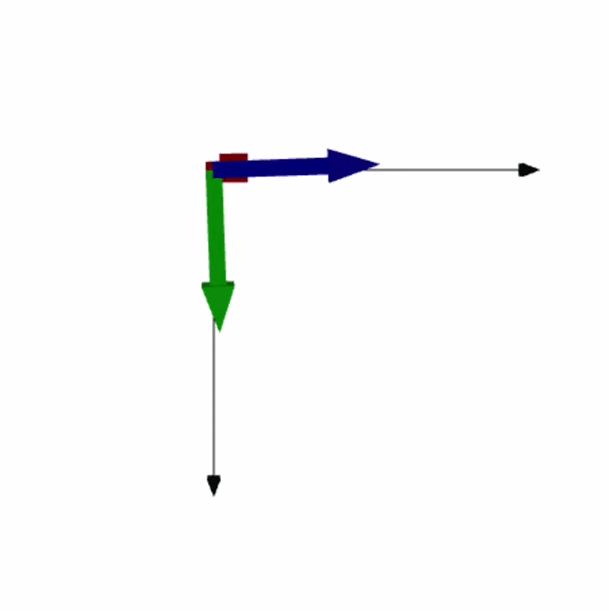

Fixed-Wing UAV
Designed, analyzed, and fabricated a 1.3 m fixed-wing aircraft from scratch - airfoil selection through maiden flight, with FPV video integration.
What I did
Selected airfoils in XFOIL and sized wing geometry for cruise performance at around 25 m/s. Used NACA 2415 for main wing for forgiving stall characteristics and allowance for some surface imperfection. Ran full stability analysis in XFLR5, iterating on CG, tail moment arm, and geometry to hit a 12.5% static margin. Designed the wing structure for a 6g load factor and performed finite element analysis to confirm structural integrity, finding a maximum tip deflection of arodun 12.1 mm using carbon-fiber skin over 3D-printed internal ribs and spars, supported by carbon-fiber rods.
Built a parallel foam-board testbed to validate flight controller configuration before maiden flight and caught 4 configuration issues before they became airborne problems. Actual weight came in at 1.8 kg vs. 1.5 kg predicted with mass growth attributed mainly to composite skin thickness uncertainty as well as 3d printing infill uncertainty. Implemented ArduPilot on F405 flight controller for data logging, increased stability, and an extra safety precaution. Validated design (loading, cruise speed, stability) maiden flight and flight controller log data.






9-State Inertial Navigation System
ESP-32 + IMU + GPS + magnetometer fused via complementary and Kalman filters for 6-DOF state estimation at 40 Hz - benchmarked against flight controller logs.
What I'm building
A 9-state INS estimating position (x,y,z), velocity (x,y,z), and attitude (roll, pitch, yaw) from fused sensor data. The complementary filter handles fast attitude estimation with IMU and magnetometer data, while the Kalman filter fuses GPS and IMU streams for position and velocity estimation. End goal is to implement Extended Kalman Filter, fusing all 9 data streams to predict the non-linear system
Building the filter from first principles rather than using a library with the goal of understand every failure mode and iterate on algorithm for higher precision estimation. Validating system by testing live data streams and later benchmarking all outputs against a trustworhty flight controller autopilot log. Found issues with position attenuation and improved estimation by ~62% by re-tuning Kalman filter noise covariance matrices. Achieved a root mean square position error of 4.9 meters, achieving goal of under 5 meters, validated against ArduPilot EKF position log.
→ View on GitHub


eVTOL Airframe - Purdue Aerial Robotics Team
Wing structure and tail assembly design and fabrication for a team eVTOL aircraft with composite construction.
My contributions
Designed 9 wing structure and tail assembly components in SolidWorks, keeping modulaitry in mind. Developed CAM toolpaths in Fusion 360 for CNC machining of 2 precision carbon-fiber layup molds within a 2-hour manufacturing window.
Developed a MATLAB optimization to find rib spacing that minimizes structural weight while preventing panel buckling by analizing stresses in between internal ribs along span. Fabricated 2 composite wing assemblies using carbon-fiber layup over laser-cut internal structures.
Heat Exchanger Performance Testing
Xchanger Internship · Summer 2026
Velocity traversals across 9 flow conditions, improving flow-rate measurement accuracy by ~10% and identifying a ~3× model underestimation in predicted pressure-drop across air-to-air heat exchanger units.
Arduino Curriculum - STEP
Purdue STEP Internship · Summer 2025 · Team
Designed and delivered a modular Arduino programming curriculum to 320 prospective engineers, teaching foundation programming skills from zero experience.
Autonomous Rover - Mars Terrain
Purdue ENGR 161 · Fall 2024 · Team
LEGO + Raspberry Pi rover navigating terrain and obstacles, following a line, and depositing cargo at a location determined by magnetic beacon localization.
Disaster Relief Delivery Robot
Purdue ENGR 162 · Spring 2025 · Team
Maze-navigating robot with real-time path mapping, IR and magnetic obstacle avoidance, and autonomous cargo delivery with no pre-loaded map.
CAD & Analysis
Programming
Fabrication